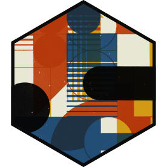

polyclid 
WORK IN PROGRESS
polyclid extents the computational geometry framework provided by euclid by providing base classes and algorithms for working with 2D polygons and polylines. The new classes provided by polyclid are:
polyline: A line consisting of several segments joined consecutively at their end points
polygon: A polygon optionally with holes but without any “islands” (e.g. no disjoint parts). The polygon can be unbounded, i.e. it extents infinitely on the plane
polyline_set: A collection of polylines especially useful as intermediary representation for some workflows as it facilitates line sweeping
polygon_set: Like above but for polygons. Boolean operations on polygons will create sets as the result may be disjoint areas
As for algorithms, to the extent that it makes sense all methods provided by euclid has a counterpart in polyclid. Further, methods specific to polygons and polylines are provided such as 2D boolean set operations, polygon validation, etc.
Installation
You can install the development version of polyclid like so:
devtools::install_github("thomasp85/polyclid")Code of Conduct
Please note that the polyclid project is released with a Contributor Code of Conduct. By contributing to this project, you agree to abide by its terms.